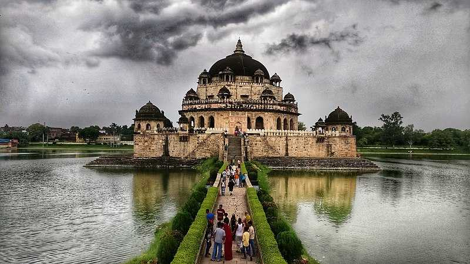
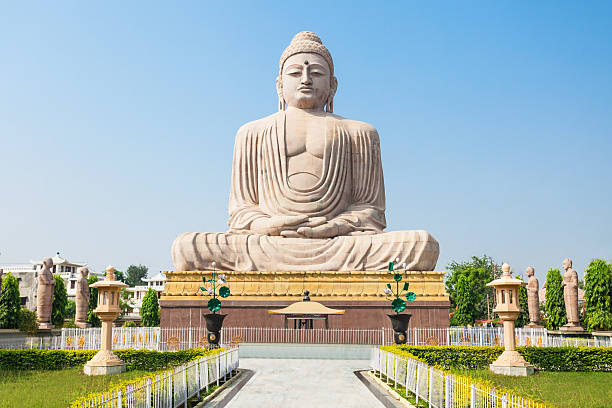
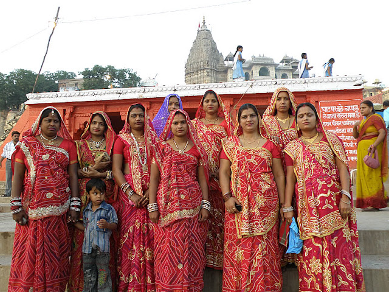
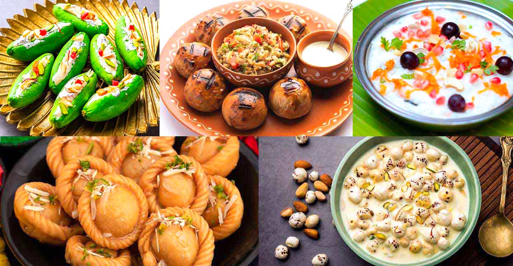
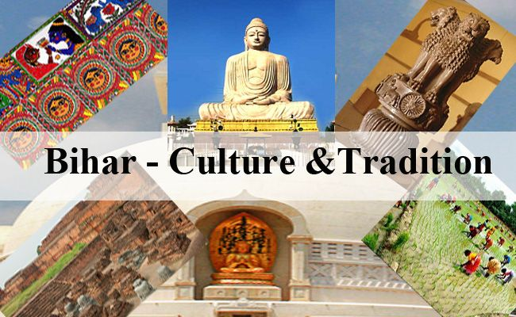

| ✧ Aspect | Information |
|---|---|
| ✧ Capital | Patna |
| ✧ Chief minister | Nitish Kumar |
| ✧ Largest City | Patna |
| ✧ Districts | 38 |
| ✧ Official Language | Hindi |
| ✧ other Language | Maithili, Bhojpuri and Magadhi |
| ✧ Population | Approximately 124 million |
| ✧ Area | 94,163 square kilometers |
| ✧ Major Rivers | Ganga, Sone, Kosi |
| ✧ Major Industries | Agriculture, Tourism, Manufacturing |
| ✧ Popular Places | Mahabodhi Temple, Bodh Gaya, Vikramshila University, Patna Museum |
Traditional attire in Bihar includes dhoti-kurta and lungi for men, while saree and salwar kameez for women. However, western attire is becoming increasingly common among the younger generation.
Bihar, situated in the eastern part of India, has a rich historical legacy dating back to ancient times. The region has been witness to the rise and fall of numerous empires and civilizations, shaping its cultural and historical identity.
The early history of Bihar is marked by the emergence of powerful kingdoms such as the Magadha Empire, which played a significant role in the spread of Buddhism and Jainism. The Maurya and Gupta dynasties further contributed to the region's cultural and intellectual advancement.
Bihar's medieval history saw the establishment of several important centers of learning, including Nalanda and Vikramshila universities, which attracted scholars from across the world. The region also witnessed the rule of various dynasties like the Pala and Sena dynasties.
During the colonial period, Bihar was under British rule and experienced significant socio-economic changes. The region played a crucial role in India's struggle for independence, with leaders like Dr. Rajendra Prasad and Jayaprakash Narayan leading various movements.
After independence, Bihar became a state of the Indian Union. Despite facing challenges like poverty and underdevelopment, Bihar has made strides in various sectors, including agriculture, education, and healthcare.
Today, Bihar continues to preserve its rich cultural heritage while embracing modernity, making it a unique blend of tradition and progress.




